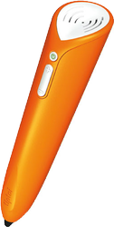

tiptoi
Dieser Artikel wurde für die folgenden Ubuntu-Versionen getestet:
Ubuntu 16.04 Xenial Xerus
Ubuntu 14.04 Trusty Tahr
Zum Verständnis dieses Artikels sind folgende Seiten hilfreich:
 tiptoi®
tiptoi®  ist ein audio-digitales Lernsystem für Kinder im Alter von 4 bis 10 Jahren. Spielerisch entdeckt das Kind mit dem tiptoi-Stift die Welt über die Bücher, Tierfiguren, Spiele und Puzzles des Lernsystems. Das passende Geräusch, die Sprache oder die Musik wird durch Antippen des Textes oder des jeweiligen Bildes wiedergegeben. Dazu verwendet der Stift die OID-Technologie. Ein optischer Sensor erkennt die aufgebrachten Kodierungen, welche für das menschliche Auge nicht sichtbar sind, und löst damit die entsprechenden Aktionen aus. Die Technik steckt nur im Stift und nicht in den zur Verfügung stehenden Produkten. Die aktuelle Version des Stifts kann zusätzlich Lieder und Hörbücher abspielen, da ein Player integriert ist.
ist ein audio-digitales Lernsystem für Kinder im Alter von 4 bis 10 Jahren. Spielerisch entdeckt das Kind mit dem tiptoi-Stift die Welt über die Bücher, Tierfiguren, Spiele und Puzzles des Lernsystems. Das passende Geräusch, die Sprache oder die Musik wird durch Antippen des Textes oder des jeweiligen Bildes wiedergegeben. Dazu verwendet der Stift die OID-Technologie. Ein optischer Sensor erkennt die aufgebrachten Kodierungen, welche für das menschliche Auge nicht sichtbar sind, und löst damit die entsprechenden Aktionen aus. Die Technik steckt nur im Stift und nicht in den zur Verfügung stehenden Produkten. Die aktuelle Version des Stifts kann zusätzlich Lieder und Hörbücher abspielen, da ein Player integriert ist.
Jedes Produkt von Ravensburger benötigt passende Audiodateien. In der Grundinstallation (ohne / mit Player) sind je nach Ausführung Bücher (z.B. WWW Bauernhof.gme) oder Audiodateien (z.B. Olchi-Detektive - Das Mikado-Komplott.rav) bereits vorinstalliert. Eigene Bücher können mit tttool erstellt werden.
Bedienung¶
|  | |
| tiptoi®-Stift | tiptoi®-Stift mit Player |
Der Stift wird zunächst über das im Lieferumfang enthaltene USB-Kabel mit dem Computer verbunden und als Massenspeicher erkannt.
Firmware¶
Bei dem Erwerb eines Produktes empfiehlt es sich, die aktuelle Firmware von Ravensburger.de zu beziehen, da diese mitunter neue Funktionen mitbringt.
Für das Firmware-Update benötigt man die zwei Dateien update.upd und updateXXXX.upd von Ravensburger.de  , XXXX steht für die Version z.B. update3202.upd. Beide Dateien kopiert man nach dem Herunterladen in das Stammverzeichnis des tiptoi-Stifts. Der Stift erkennt beim nächsten Einschalten, ob die Datei eine aktuellere Firmware enthält als die bereits installierte. Sollte dies nicht der Fall sein, löscht der Stift die Datei automatisch. In der .xml-Datei, welche auf tiptoi.com einzusehen ist, kann die aktuelle Firmware abgelesen werden.
, XXXX steht für die Version z.B. update3202.upd. Beide Dateien kopiert man nach dem Herunterladen in das Stammverzeichnis des tiptoi-Stifts. Der Stift erkennt beim nächsten Einschalten, ob die Datei eine aktuellere Firmware enthält als die bereits installierte. Sollte dies nicht der Fall sein, löscht der Stift die Datei automatisch. In der .xml-Datei, welche auf tiptoi.com einzusehen ist, kann die aktuelle Firmware abgelesen werden.
In diesem Beispiel wird Version 136 verwendet:
1 2 3 4 5 | <firmware> <version>136</version> <path>http://static.tiptoi.com/db/firmware/update encrypt normal freq.upd</path> <checksum>28F7854A</checksum> </firmware> |
Hinweis:
Das beschriebene Vorgehen betrifft nur den Stift ohne Player. Bei der aktuellen Version des Stiftes mit Player wird die Firmware automatisch mit jeder neu heruntergeladenen Datei aktualisiert.
Audiodateien¶
Der tiptoi-Stift benötigt für jedes Spiel, Tier, Buch oder Puzzle aus der Reihe eine passende Audiodatei, um mit dem jeweiligen Produkt verwendet werden zu können. Hier die Seite des jeweiligen Produkts auswählen (z.B. tiptoi® Star Wars™ Episode I-VI . Dann "Audioinhalte manuell herunterladen" wählen und nach Eingabe einer gültigen E-Mail-Adresse wird der Download-Link an diese gesendet. Dieser setzt sich wie folgt zusammen: static.tiptoi.com/db/applications/TITEL.gme (z.B. http://static.tiptoi.com/db/applications/Spielwelt%20Autorennen.gme )
Alternativ kann die Datei auch direkt herunter geladen werden, dazu den Link "Alternativ: Anleitung zum manuellen Download direkt anzeigen." ganz unten im Popup wählen.
 Nachdem das Gerät mit dem PC verbunden wurde, die Datei mit der Endung .gme auf den Stift kopieren [1] (z.B. Rekorde_im_Tierreich.gme) und diesen anschließend aushängen. Das neue Produkt kann nun verwendet werden.
Nachdem das Gerät mit dem PC verbunden wurde, die Datei mit der Endung .gme auf den Stift kopieren [1] (z.B. Rekorde_im_Tierreich.gme) und diesen anschließend aushängen. Das neue Produkt kann nun verwendet werden.
Aktualisierungen¶
In seltenen Fällen erfahren die Audiodateien Aktualisierungen. Am Änderungsdatum der jeweiligen Datei kann man überprüfen, ob eine aktuellere Version verfügbar ist.
Dies ist ebenfalls in der Datei tiptoi.xml, welche unter tiptoi.com eingesehen werden kann, ersichtlich:
1 2 3 4 5 6 7 8 9 | <news> <teaser id="32"> <type>1</type> <headline>Aktualisierte Audiodatei verfügbar</headline> <subheadline>Der interaktive Globus - puzzleball® </subheadline> <productRef>515</productRef> <image>http://static.images.ravensburger.de/images/produktseiten/150/00515.jpg</image> </teaser> </news> |
Hörspiele und Lieder¶
Im Shop von Ravensburger können Hörspiele und Lieder für Stifte mit integriertem Player erworben werden. Die Dateien liegen im .rav-Format vor - andere Codecs werden vom Stift nicht wiedergegeben. Um einen erworbenen Titel auf dem Stift nutzen zu können, muss man diesen zuerst in der Stift-Verwaltung anmelden. Nach Eingabe der Seriennummer, welche im Batteriefach des Stifts zu finden ist, sowie einer optionalen Namensvergabe kann der Stift hinzugefügt werden. Über "Gekauften Titel manuell zuweisen" wird ein zuvor erworbener Titel ausgewählt und dem ausgewählten Sift zugeordnet. Die Berechtigung eines Titels gilt nur für einen Stift. Im nächsten Schritt erhält man einen Link, um die Datei herunterladen zu können. Hier mit einem  Rechtsklick auf "Download" den Titel auf dem Computer oder dem Stift speichern. Ein Archiv (.zip-Datei) muss im Vorfeld entpackt [2] werden. Abschließend die Datei .tiptoi.key über einen Rechtsklick im Ordner system des Stifts ablegen.
Rechtsklick auf "Download" den Titel auf dem Computer oder dem Stift speichern. Ein Archiv (.zip-Datei) muss im Vorfeld entpackt [2] werden. Abschließend die Datei .tiptoi.key über einen Rechtsklick im Ordner system des Stifts ablegen.
Ordnerstruktur¶
| Ordnerstruktur | |
| Ordner | Beschreibung |
| / | Im Stammverzeichnis liegen alle .gme-Dateien. Hier wird ebenfalls die neue Firmware abgelegt. |
| stories | Hörspiele |
| songs | Lieder |
| system | Systemdateien - wie z.B. .tiptoi.key |
Tipps¶
tiptoi® Manager¶
Für die Verwaltung der tiptoi stellt Ravensburger eine Anwendung bereit, den tiptoi® Manager , den es leider nur als Windows- und als OS-X-Installationspaket gibt. Mit dem Manager kann ein tiptoi mit allen Daten bespielt, aktualisiert und aktiviert werden.
Bei dem tiptoi® Manager von Ravensburger handelt es sich um eine Java-Anwendung, die leider nicht mit OpenJDK läuft. Nach der Installation mit Wine findet sich im Installationsverzeichnis ein Unterordner application/, in dem die .jar-Datei liegt, die sich mit Oracle Java starten lässt. Eine Aktivierung des tiptoi ist darüber dann auch ohne Aktivierungsblatt möglich.
Infobox¶
| tiptoi® - Der Stift | |
| Herausgeber: | Ravensburger |
| Erscheinungsjahr: | 2010 / 2015 (mit Player) |
| Technische Daten: | 512MB bis 4GB interner Speicher (Versionsabhängig) / Mini-USB (USB 2.0) / 3,5mm Klinkenbuchse |
| USB ID: | 04d6:e301 Mentor Graphics (alte Version) 04d6:e101 Mentor Graphics (mit Player) |
| Strichcode / EAN / GTIN: | 4005556005000 / 4005556007004 |
| Läuft mit: | nativ |
- Erstellt mit Inyoka
-
 2004 – 2017 ubuntuusers.de • Einige Rechte vorbehalten
2004 – 2017 ubuntuusers.de • Einige Rechte vorbehalten
Lizenz • Kontakt • Datenschutz • Impressum • Serverstatus -
Serverhousing gespendet von